vignettes/variogram.Rmd
variogram.RmdIn this vignette, we walk through data preparation, variogram analysis, and maximum likelihood estimation.
We highly recommend that you get your data onto Movebank. This will help ensure that your data are of the correct format for ctmm, help you identify outliers, and you can keep your data completely private if you wish. ctmm requires that your dataframe conforms to Movebank naming conventions (see help(as.telemetry)). The next step is then to import your MoveBank csv file:
yourAnimals <- as.telemetry("yourAnimalsMoveBank.csv")Alternatively, if you want to clean your csv file first, you can import it as a data frame
yourAnimalsDF <- read.csv("yourAnimalsMoveBank.csv")and then edit the data frame before converting it into a telemetry object for ctmm via
yourAnimals <- as.telemetry(yourAnimalsDF)as.telemetry also works on Move objects, which can be useful as the move package interfaces directly with MoveBank through R (see help(move::getMovebankData)).
A flat projection is necessary and for most species the default two-point equidistant projection will be fine. However, you can provide any PROJ.4 formatted projection with the projection argument (see help(as.telemetry)). A single fixed projection should be used if you are going to plot groups of individuals that span multiple MoveBank files. This is done by default if multiple individuals are included in a single data frame.
The output of as.telemetry will be an individual telemetry object or list of telemetry objects, depending on how many individual animals are in your csv file. The basic structure of a telemetry object is a data frame with columns t for time in seconds, and x and y for the projected locations in meters. Messages generated by as.telemetry may warn users about improper time formatting or spurious relocations. Possible outliers can be examined with the help of the outlie function.
Our example buffalo data is already prepared into a list of telemetry objects. Let us look at the first buffalo and then every buffalo:
library(ctmm)
data("buffalo")
Cilla <- buffalo$Cilla
plot(Cilla)
title("1 Buffalo")
plot(buffalo,col=rainbow(length(buffalo)))
title("5 Buffalo")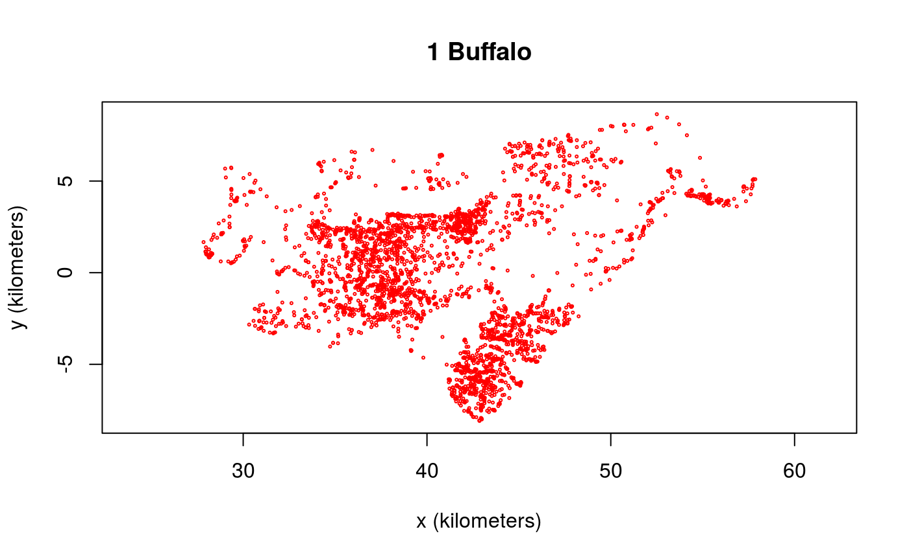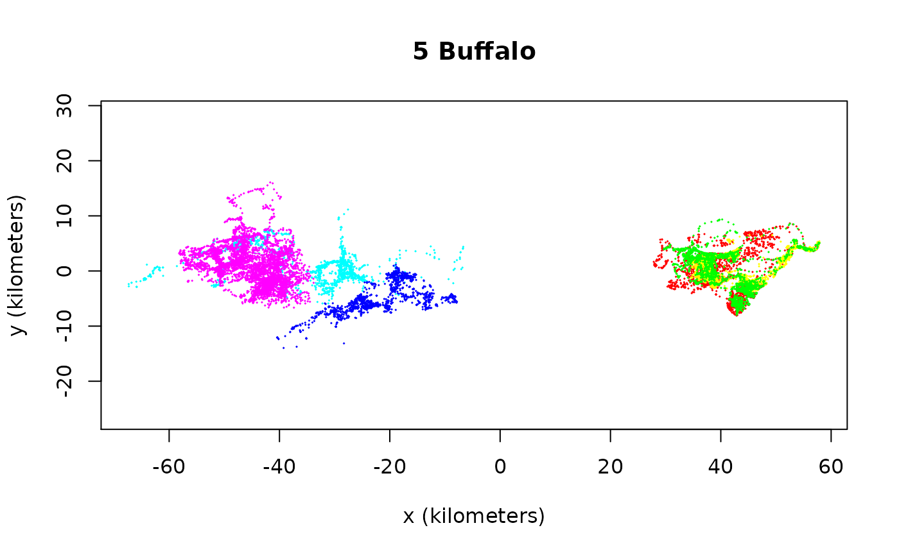
Looking at the raw movement tracks is a good way to pick out any obvious migratory behaviors. In the future, we will have migration models to select, but for now all of our models are range resident and so only those portions of the data should be selected. These buffalo all look fairly range resident, and so we can move on to variograms.
Variograms are an unbiased way to visualize autocorrelation structure when migration, range shifting, drift, or other translations of the mean location are not happening. When drift occurs in the data, then the variogram represents a mixture of both the drift and the autocorrelation structure, each of which contains distinct movement behaviors. In the future, we will have models that can allow for drift, but the current models assume range residence, which we can check with the variogram.
SVF <- variogram(Cilla)
level <- c(0.5,0.95) # 50% and 95% CIs
xlim <- c(0,12 %#% "hour") # 0-12 hour window
plot(SVF,xlim=xlim,level=level)
title("zoomed in")
plot(SVF,fraction=0.65,level=level)
title("zoomed out")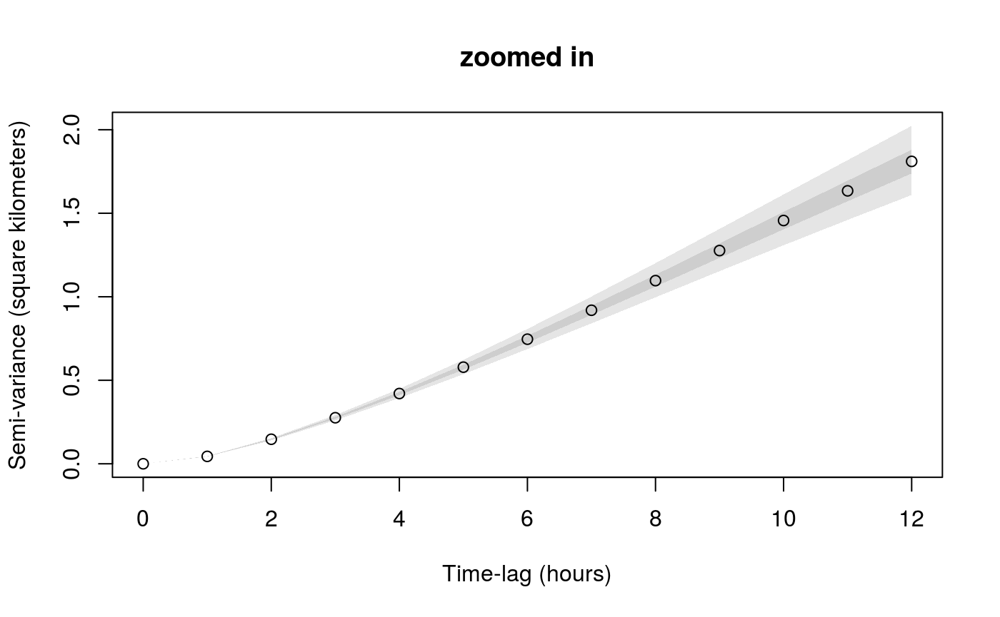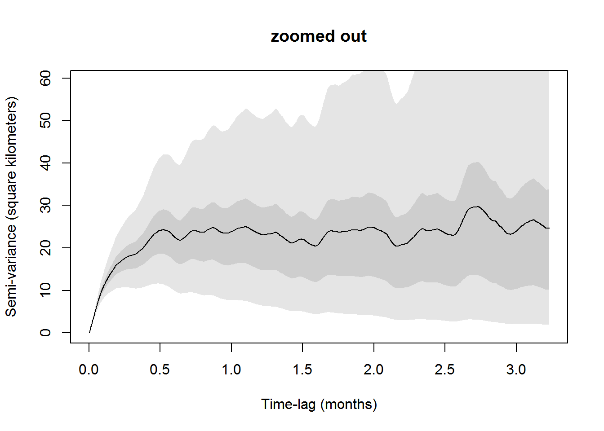
The first plot is zoomed in to the short lag behavior, while the second plot is zoomed out. You can do this on the fly with zoom(Cilla) in R-studio. The variogram represents the average square distance traveled (vertical axis) within some time lag (horizontal axis).
For the long range behavior we can see that the variogram flattens (asymptotes) at approximately 20 days. This is, roughly, how coarse you need to make the timeseries so that methods assuming independence (no autocorrelation) can be valid. This includes, conventional kernel density estimation (KDE), minimum convex polygon (MCP), conventional species distribution modeling (SDM), and a host of other analyses.
The asymptote of our variogram is around 23 square km, and the fact that it takes roughly 20 days for the variogram to asymptote is indicative of the fact that the buffalo’s location appears continuous at this timescale. This is also, roughly, the time it takes for the buffalo to cross its home range several times.
In the next sections we will “fit” models the variograms. This is not a rigorous statistical fitting, but a good way of choosing candidate movement models and guessing at their parameters. The variogram-fit parameter guestimates will then be fed into maximum likelihood estimation, which requires good initial guesses for non-linear optimization.
For pedagogical reasons we first “fit” models to the variogram by hand, while later we will use a much easier method. we can manually guesstimate some continuous-time models for the aforementioned behavior with the commands
m.iid <- ctmm(sigma=23 %#% "km^2")
m.ou <- ctmm(sigma=23 %#% "km^2",tau=6 %#% "day")
plot(SVF,CTMM=m.iid,fraction=0.65,level=level,col.CTMM="red")
title("Independent and identically distributed data")
plot(SVF,CTMM=m.ou,fraction=0.65,level=level,col.CTMM="purple")
title("Ornstein-Uhlenbeck movement")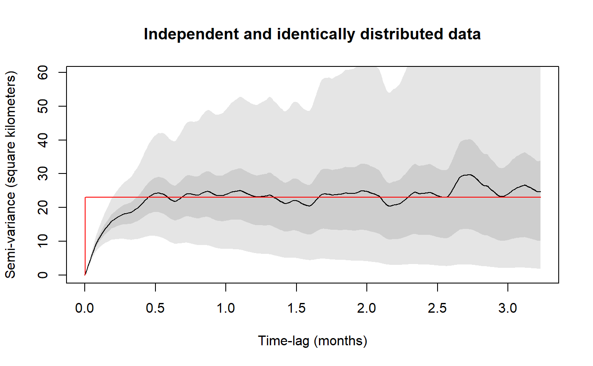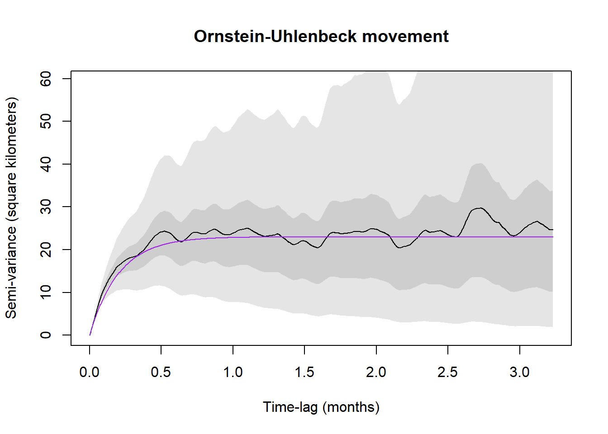
where for both the models m.iid and m.ou, sigma (σ) is the asymptotic variance. In the Ornstein-Uhlenbeck (OU) model m.ou, tau (τ) is a single timescale that governs the autocorrelation in position and dictates the animal’s home-range crossing time. The independent and identically distributed (IID) null model m.iid has no autocorrelation. Notice that all units are in meters and seconds, as output by the utility function %#% (see help("%#%").
The IID model m.iid is obviously incorrect and in the zoomed in plot we can also see that the OU model m.ou is incorrectly linear at short lags, whereas the empirical variogram actually curves up for an hour or two before it becomes linear. Let us introduce a model that incorporates this behavior.
m.ouf <- ctmm(sigma=23 %#% "km^2",tau=c(6 %#% "day",1 %#% "hour"))
plot(SVF,CTMM=m.ou,level=level,col.CTMM="purple",xlim=xlim)
title("Ornstein-Uhlenbeck movement")
plot(SVF,CTMM=m.ouf,level=level,col.CTMM="blue",xlim=xlim)
title("Ornstein-Uhlenbeck-F movement")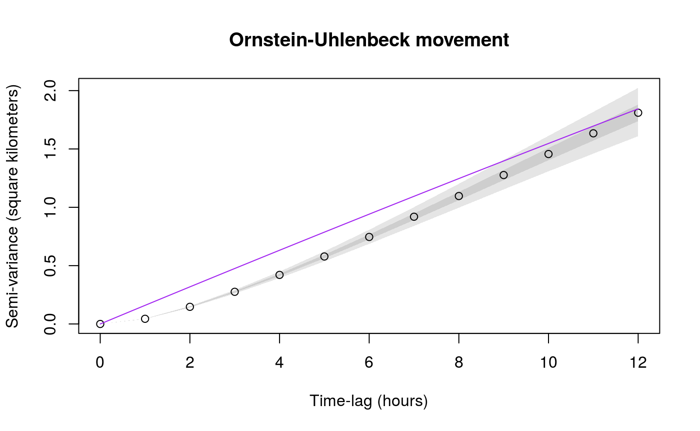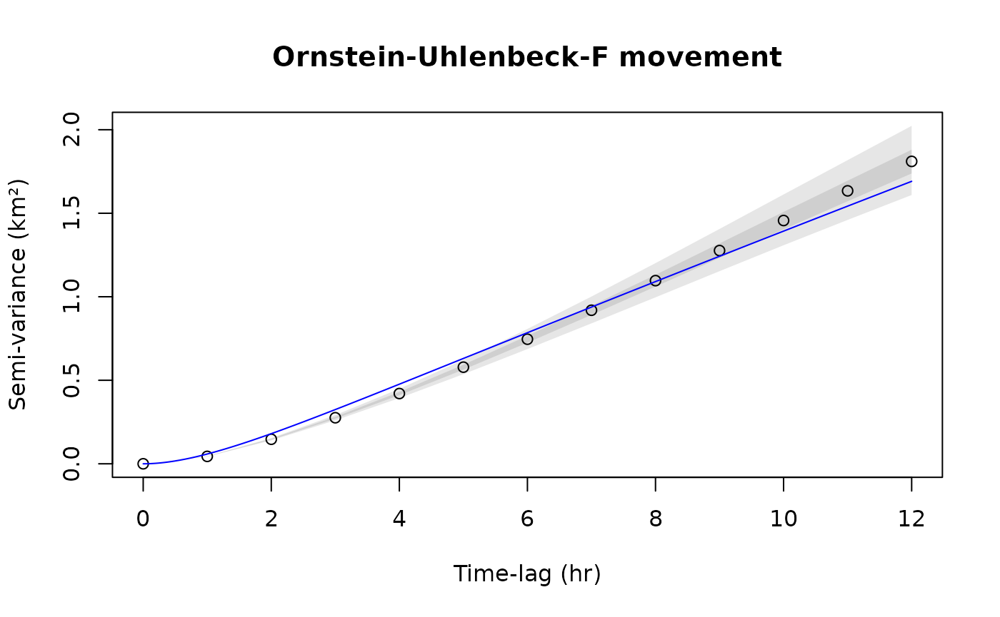
The confidence intervals at short lags are also very narrow, though both of these models look the same at coarser scales and so the discrepancy is only revealed by high resolution data.
plot(SVF,CTMM=m.ou,fraction=0.65,level=level,col.CTMM="purple")
title("Ornstein-Uhlenbeck movement")
plot(SVF,CTMM=m.ouf,fraction=0.65,level=level,col.CTMM="blue")
title("Ornstein-Uhlenbeck-F movement")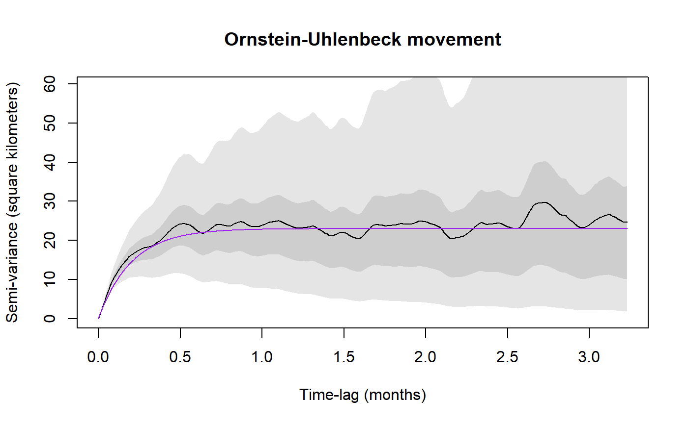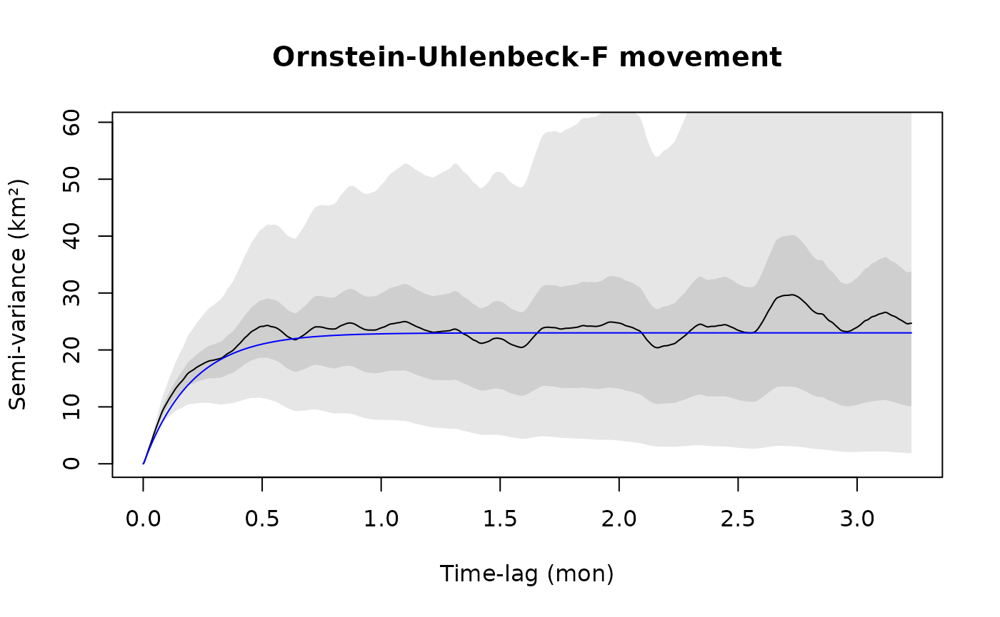
The Ornstein-Uhlenbeck-F (OUF) model m.ouf introduces an additional autocorrelation timescale for the animal’s velocity, so that it more closely matches the initial behavior of the variogram. The initial curve upwards tells us that there is continuity in the animal’s velocity at this timescale. Conventional Markovian animal movement models do not capture this, which leads to the same kind of bias and underestimation of confidence intervals as when ignoring autocorrelation entirely.
The linear regime of the variogram (regular diffusion) is just as important as the asymptotic regime. In the linear regime it is reasonable to assume a Markovian model as with step selection functions (SSF) and Brownian bridges (BB). Therefore, the variogram has informed us as to how much we need to coarsen our data for it to be appropriate in many common analyses that neglect various aspects of movement.
The R-studio function variogram.fit(SVF) is much easier to use than guestimating the model parameters by hand as we did above. variogram.fit gives you sliders to choose the most visually appropriate parameters and save them to a global variable (GUESS by default).
Random gaps in the data are acceptable and fully accounted for in both variogram estimation and model fitting. However, if under any condition the sampling rate changes during data collection, then you will have to account for that in the variogram with the dt argument. In the following example, the collar was programmed to cycle between 1, 5, 25 hour sampling intervals
data("gazelle")
SVF3 <- variogram(gazelle[[18]])
plot(SVF3,fraction=0.85,level=level)
title("Default method")
# 1, 5, 25 hour sampling intervals
dt <- c(1,5,25) %#% "hour"
SVF3 <- variogram(gazelle[[18]],dt=dt)
plot(SVF3,fraction=0.85,level=level)
title("Multi method")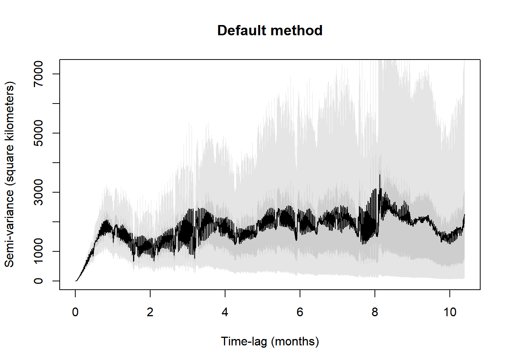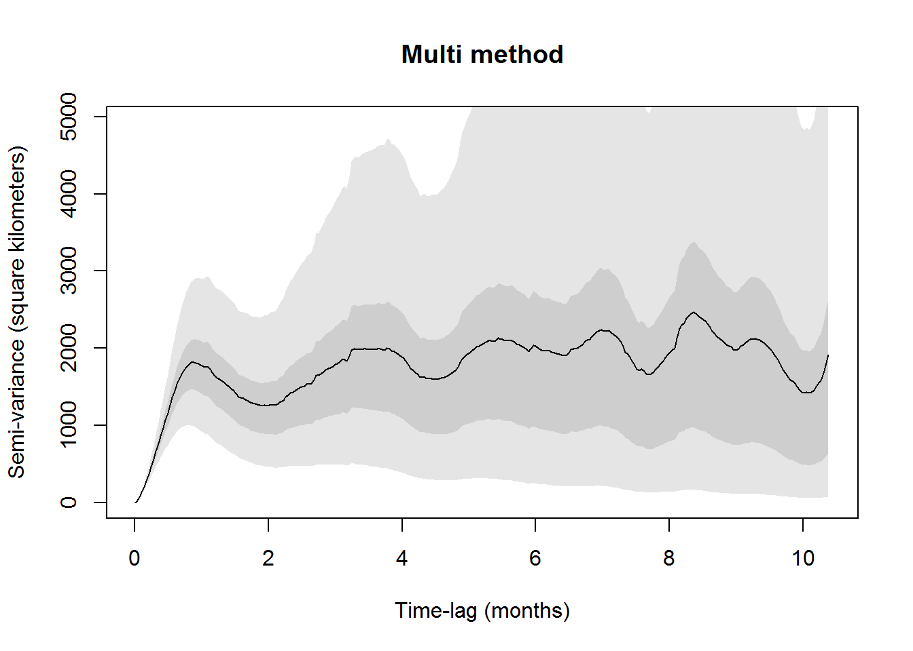
With small amounts of highly irregular data, you may also want to try fast=FALSE.
If multiple individuals exhibit similar movement behaviors, then we can pool their individual variograms to create a more precise population variogram. You should be careful though, if the individual movement behaviors and sampling schedules are not identical, then there will be discontinuities at lags where one timeseries runs out of data.
# buffalo 4 is bad
SVF4 <- lapply(buffalo[-4],variogram)
SVF4 <- mean(SVF4)
plot(SVF4,fraction=0.35,level=level)
title("Population variogram")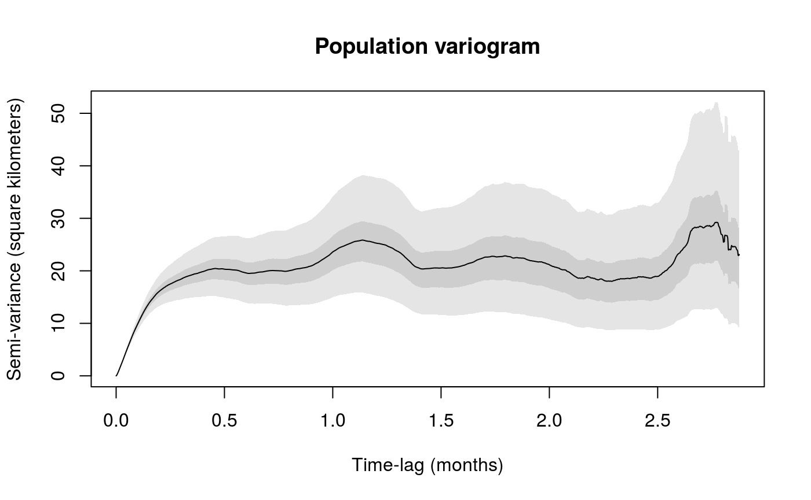
Non-stationary behaviors, like a seasonal change in variance, is averaged over in the variogram. Moreover, if we fit a stationary model to non-stationary data, we are estimating an average effect. For instance, if an animal rests at night and diffuses at some rate D during the day, then without modeling the rest behavior we estimate an average of zero and D. Its not terribly detrimental to average over frequently repeated non-stationarity, but if an animal migrates once in a dataset then this behavior really needs to be in the model. These kinds of models will be included in future versions of ctmm.
Alternatively, you can also break up the data by hand into multiple behaviors and fit each behavior individually. This is highly recommended for migratory species, at present.
Here we take our guestimates from variogram fitting the hard way and perform model selection manually. Later we will finish everything off the easy way. First let us fit each of our proposed models m.iid, m.ou, m.ouf, store the corresponding best-fit result in M.IID, M.OU, M.OUF, and then compare some of their outputs.
## $name
## [1] "IID anisotropic"
##
## $DOF
## mean area speed
## 3527.000 3522.146 0.000
##
## $CI
## low est high
## area (square kilometers) 356.9182 369.0051 381.2905## $name
## [1] "OU anisotropic"
##
## $DOF
## mean area speed
## 5.430229 8.231787 0.000000
##
## $CI
## low est high
## area (square kilometers) 181.703274 414.86723 742.63012
## τ[position] (days) 5.232246 16.55615 52.38783## $name
## [1] "OUF anisotropic"
##
## $DOF
## mean area speed
## 10.73354 18.13597 3445.13306
##
## $CI
## low est high
## area (square kilometers) 239.647393 403.458790 609.24115
## τ[position] (days) 4.026011 7.505366 13.99165
## τ[velocity] (minutes) 39.570325 42.069009 44.72547
## speed (kilometers/day) 13.819957 14.054636 14.28926Notice how tiny the (Gaussian) area uncertainty is in IID model M.IID. Let us look into some details of the models.
## ΔAICc ΔRMSPE (m) DOF[area]
## OUF 0.000 352.8532 18.135971
## OU 1565.291 779.5547 8.231787
## IID 38112.149 0.0000 3522.145533AICc is the (linearly) corrected Akaike information criteria. AIC balances likelihood against model complexity in a way that is good if we want to make optimal predictions. A lower AIC is better. Getting the AIC to go down by 5 is great, while getting the AIC to go down by 10 is awesome. Our AIC is going down by thousands.
The fit parameter DOF[mean] is the number of degrees of freedom worth of data we have to estimate the stationary mean parameter, assuming that the model is correct. Notice that the IID model perceives thousands of independent data points, while the autocorrelated OU and OUF models only see a handful of independent data points. This is why the IID model produced tiny confidence intervals on the predicted (Gaussian) area.
If you have a complex, hypothetical model in mind, say the OUF m.ouf as you would get from variogram fitting the easy way, then you can perform model selection more conveniently with the ctmm.select function. ctmm.select considers the initial guess (hypothesis) and then iterates this model to select the best model based upon an information criteria.
# CRAN policy limits us to 2 cores
FITZ <- ctmm.select(Cilla,m.ouf,verbose=TRUE,cores=2)
summary(FITZ)## ΔAICc ΔRMSPE (km) DOF[area]
## OUF anisotropic 0.0000 1.776671 18.135980
## OUF isotropic 67.7508 1.912066 17.912942
## OU anisotropic 1565.2907 2.203373 8.231786
## OUf anisotropic 1863.8799 0.000000 345.919727The isotropic and anisotropic (isotropic=FALSE) flags correspond to circular and elliptical covariances respectively—an option we did not consider above. The OUf model is a special case of the OUF model where the two autocorrelation timescales, τ position and τ velocity, cannot be distinguished. This model is usually only relevant for short tracks of data. The IID model was never considered here by ctmm.select because it first requires selecting OU over OUF in the nested model hierarchy. See help("ctmm") for more options.
Now its time to make sure that our selected model is explaining the most significant features of the animal’s movement. Let us plot the variogram again with our fit models
plot(SVF,CTMM=FITS,col.CTMM=c("red","purple","blue"),fraction=0.65,level=0.5)
title("zoomed out")
plot(SVF,CTMM=FITS,col.CTMM=c("red","purple","blue"),xlim=xlim,level=0.5)
title("zoomed in")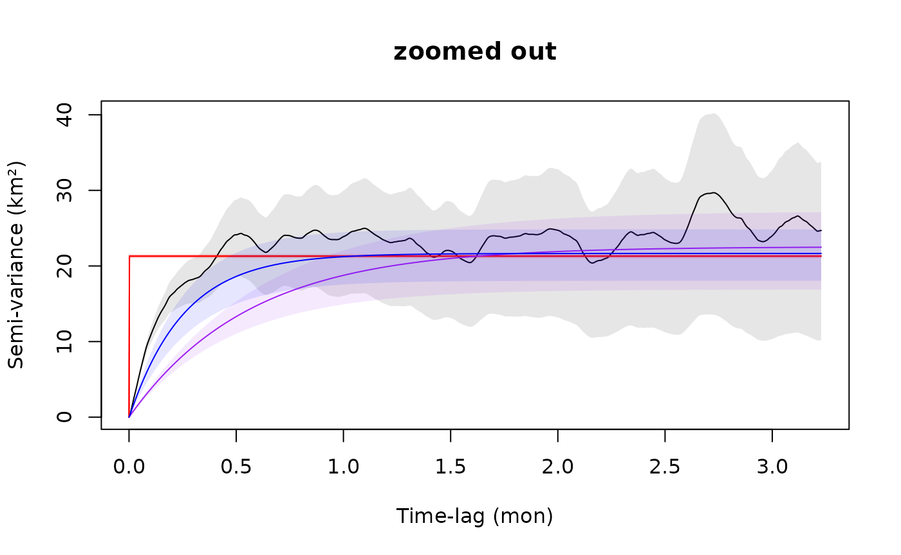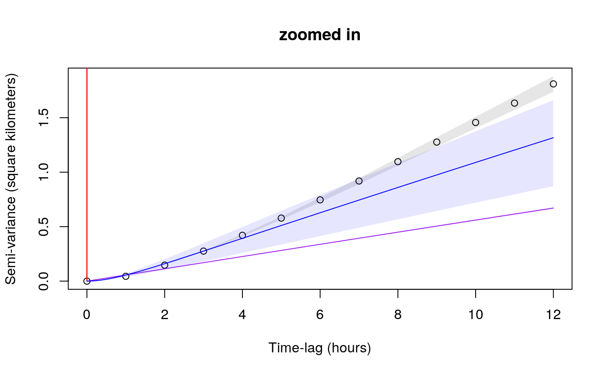
Notice that the purple OU model M.OU is significantly biased downward and is underestimating diffusion. This is because the continuous-velocity behavior at short time lags, which M.OU does not account for, is throwing off the estimate. The IID model M.IID is ignoring autocorrelation completely, while the OU model M.OU is ignoring autocorrelation in the buffalo’s velocity.
While the OUF M.OUF is the selected model among all candidates, M.OUF looks slightly biased upwards in comparison to the variogram fit m.ouf. Some of this is due to sampling variability, which be (partially) remedied in the variogram method by increasing the res argument. Differences here can also arise from not accounting for telemetry error, which is unfortunately not annotated in this data.